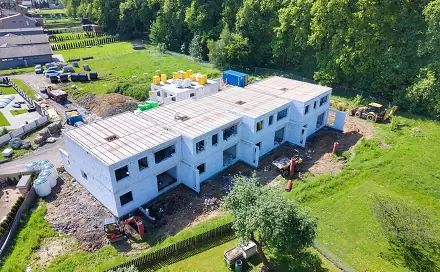
New to tracker — actual advert age unknown
prodej domu 168 m² s pozemkem 373 m² Ostrava 13 432 500 Kč
prodej domu 168 m² s pozemkem 373 m² Ostrava 13 432 500 Kč
Not stated → 13,432,500 CZK
Original advert ↗Daily market update · 2026-11-19 · Ostrava + 15 km
Data limitation: Prices are advertised, not completed transaction prices. Disappeared adverts are NOT proof of sold or rented status. Search radius may be unverified for individual locations. "New" means first observed since a comparable complete Sreality scan, not independently verified as newly published. "New to tracker" may reflect expanded or partial portal coverage. Older Sreality IDs and known cross-lists are excluded. Additional monthly rental charges are not reliably supplied in these search cards.

prodej domu 168 m² s pozemkem 373 m² Ostrava 13 432 500 Kč
Not stated → 13,432,500 CZK
Original advert ↗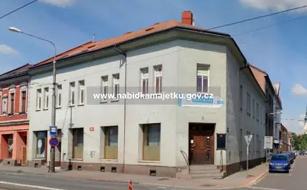
Nové prodej domu 904 m² s pozemkem 414 m² Ostrava 13 077 000 Kč
Not stated → 13,077,000 CZK
Original advert ↗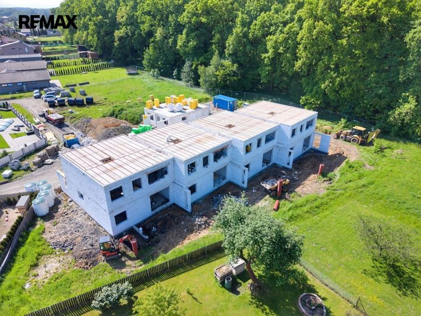
Prodej domu/vily, 168 m²
Not stated → 13,432,500 CZK
Original advert ↗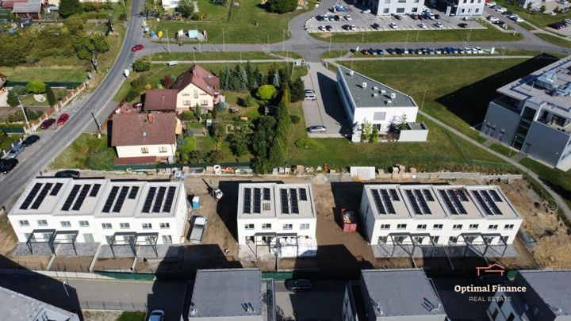
Prodej domu/vily, 129 m²
Not stated → 10,580,000 CZK
Original advert ↗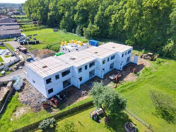
ivně Prodej domu 168 m², Ostrava (ID 344-NP00346) Ostrava – část obce Bartovice 13 432 500 Kč ( za nemovitost)
Not stated → 13,432,500 CZK
Original advert ↗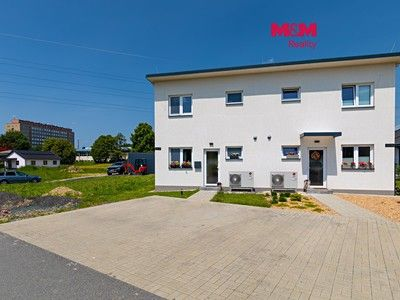
Dobrá, Frýdek-Místek
8,590,000 CZK → 8,390,000 CZK -2.33%
Original advert ↗Dobrá, Frýdek-Místek
8,590,000 CZK → 8,390,000 CZK
Original advert ↗
Dětmarovice, Karviná
Not stated → 4,490,000 CZK
Original advert ↗
Petřvald, Karviná
7,999,000 CZK → Not stated
Original advert ↗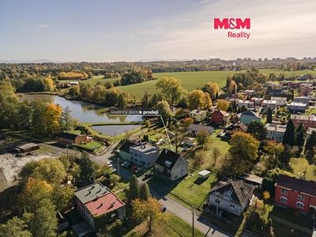
Dolní Lutyně, Karviná
3,800,000 CZK → Not stated
Original advert ↗
Bludovice, Karviná
3,900,000 CZK → Not stated
Original advert ↗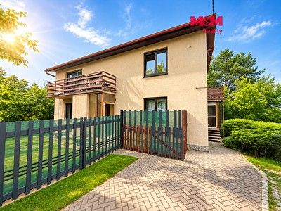
Rychvald, Karviná
8,600,000 CZK → Not stated
Original advert ↗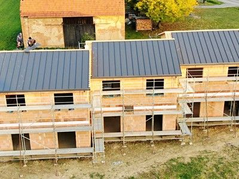
Mošnov, Nový Jičín
6,590,000 CZK → Not stated
Original advert ↗
Borová, Opava
6,800,000 CZK → Not stated
Original advert ↗
Frýdek, Frýdek-Místek
2,990,000 CZK → 2,599,000 CZK -13.08%
Original advert ↗
Petřvald, Karviná
7,150,000 CZK → Not stated
Original advert ↗
Vratimov, Ostrava-město
Not stated → 14,890,000 CZK
Original advert ↗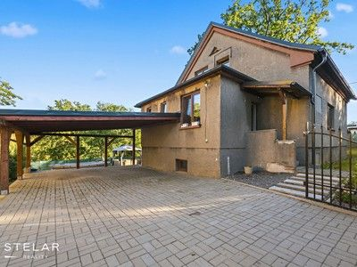
Lučina, Frýdek-Místek
8,990,000 CZK → Not stated
Original advert ↗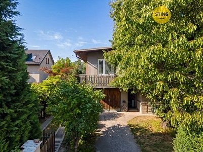
Frýdek-Místek, Frýdek-Místek
7,900,000 CZK → Not stated
Original advert ↗
Svinov, Ostrava-město
8,990,000 CZK → 8,990,000 CZK
Original advert ↗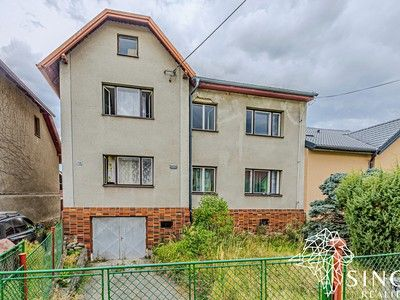
Staré Město, Frýdek-Místek
5,200,000 CZK → 4,900,000 CZK -5.77%
Original advert ↗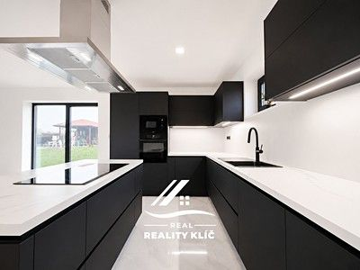
Radvanice, Ostrava-město
9,990,000 CZK → Not stated
Original advert ↗
Skřečoň, Karviná
6,450,000 CZK → 6,450,000 CZK
Original advert ↗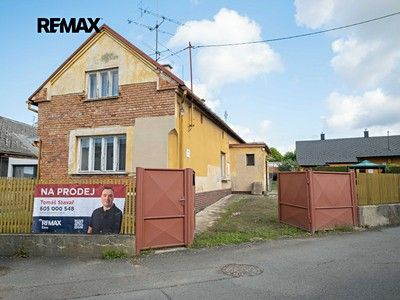
Kouty, Opava
4,190,000 CZK → 3,790,000 CZK -9.55%
Original advert ↗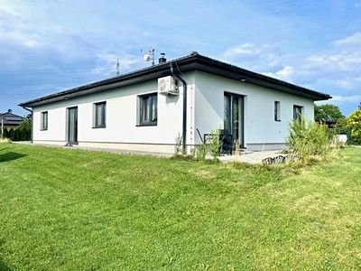
Horní Suchá, Karviná
10,590,000 CZK → 10,590,000 CZK
Original advert ↗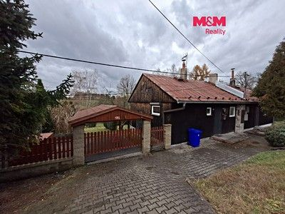
Petřvald, Karviná
Not stated → 3,300,000 CZK
Original advert ↗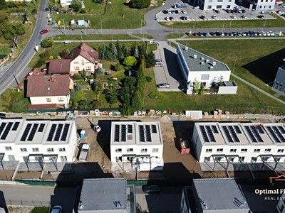
Ostrava, Ostrava-město
Not stated → 10,580,000 CZK
Original advert ↗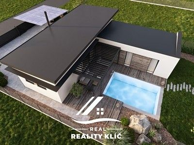
Markvartovice, Opava
Not stated → 11,990,000 CZK
Original advert ↗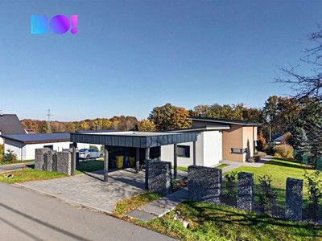
Vojkovice, Frýdek-Místek
Not stated → 14,490,000 CZK
Original advert ↗